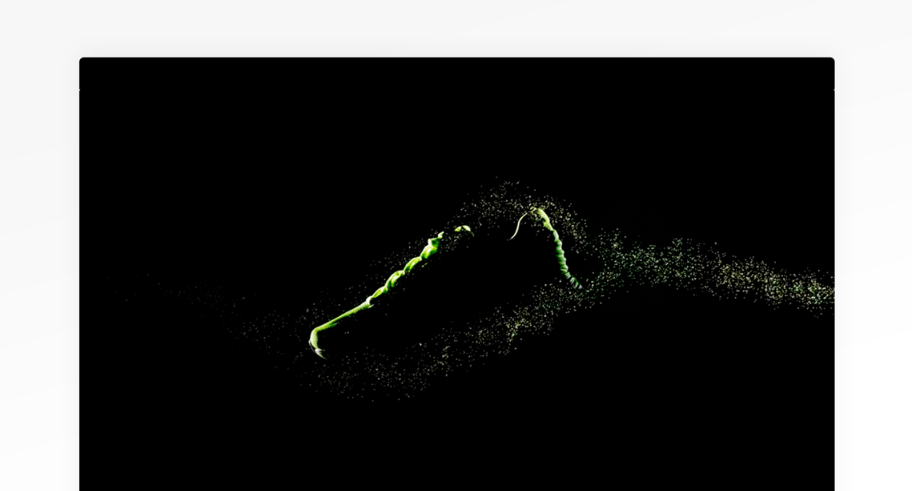

<!-- Work Section -->
<div class="work-wrap">
    <div class="work-item">
        <a href="#" class="work-link">
            <p class="copy-1 inconsolata font-bold">Ultimate Drive</p>
            <p class="copy-2 inconsolata font-reg">#interaction #racing</p>
            <div class="work-thumb translate-y">
                
            </div>
            <div class="work-detail-btn arrow-btn">
                <span class="btn-wrap">
                    <span class="btn-line"></span>
                </span>
            </div>
        </a>
        
    </div>
</div>

.work-item:hover .btn-line::before{
        -webkit-animation: arrow-right .7s cubic-bezier(.69,0,.27,1) forwards .2s;
        animation: arrow-right .7s cubic-bezier(.69,0,.27,1) forwards .2s;
    }
    .work-item:hover .btn-line::after{
      -webkit-animation: arrow-left .7s cubic-bezier(.69,0,.27,1) forwards .2s;
        animation: arrow-left .7s cubic-bezier(.69,0,.27,1) forwards .2s;  
    }

    .work-item:hover .btn-wrap{
        -webkit-transform: translateY(0);
        -ms-transform: translateY(0);
        transform: translateY(0);
    }

    .work-wrap{
        left: 100px;
        position: absolute;
        top: 100px;
        background-color: #fff;
        bottom: 100px;
        right: 100px;
        -webkit-box-shadow: 5px 10px 25px 0px rgba(0,0,0,.15);
        box-shadow: 5px 10px 25px 0px rgba(0,0,0,.15);
    }
    .work-item{
        width: 300px;
        height: 100%;
        border-right: 1px solid #c4c4c4;
        overflow: hidden;
        
    }
    .work-link{
        width: 100%;
        height: 100%;
        display: block;
        cursor: e-resize;
        position: absolute;
        z-index: 1;
    }
    .work-item::after{
        content: '';
        position: absolute;
        left: 0;
        top: 0;
        height: 100%;
        width: 0;
        display: block;
        background: rgba(0,0,0,.05);
        opacity: .6;
        z-index: 0;
        -webkit-transition: all .7s cubic-bezier(.69,0,.27,1);
        transition: all .7s cubic-bezier(.69,0,.27,1);
        will-change: transition;
    }
    .work-item:hover::after{
        width: 100%
    }
    .work-link .copy-1{
        font-size: 22px;
        text-align: center;
        padding-top: 32px;
    }
    .work-link .copy-2{
        text-align: center;
    }
    .work-thumb{
        position: absolute;
        width: 100%;
        top: 50%;
        -webkit-transition: 225ms ease all;
        transition: 225ms ease all;
        will-change: transition;
        box-shadow: 0 15px 50px rgba(0,0,0,.07);
        opacity: 0;
    }
    .work-thumb img{
        width: 100%;
    }
    .work-item:hover .work-thumb{
        opacity: 1;
        -webkit-transition: 725ms ease all .1s;
        transition: 725ms ease all .1s;
        will-change: transition; 
    }
<!-- ############################################# -->